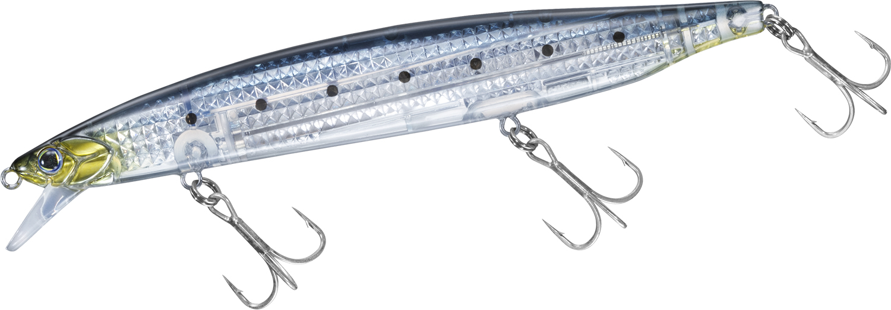
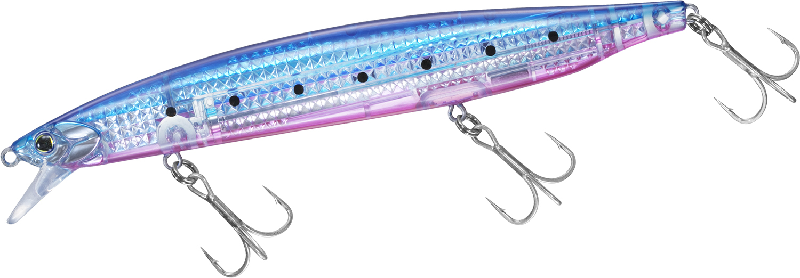
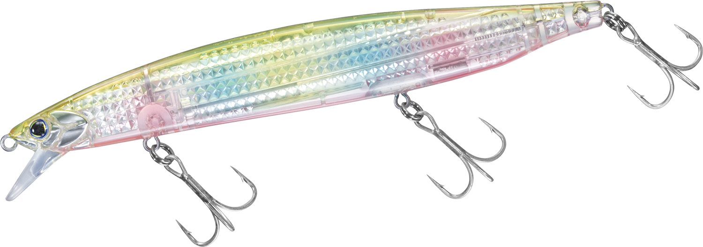
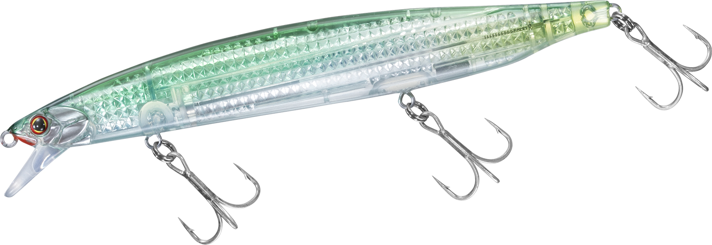

ブラインドボルト140
（BLIND BOLT 140）
ブラインドボルト140はDAIWA（ダイワ）のサワラゲーム用ミノーです。
ブラインドゲームでは、魚にルアーを見つけさせることが最重要。その役割を果たすのが、ボディサイズの存在感とレーザーインパクトの強烈なフラッシングです。フローティングの140F-LI（青目）と、シンキングの140S-LI（赤目）の2タイプがあります。

画像出典:DAIWA公式HP
スペック
- メーカー
- DAIWA（ダイワ）
- タイプ
- ミノー（140F-LI：フローティング／140S-LI：シンキング）
- 全長
- 140mm
- 自重
- 27g（140F-LI）／32g（140S-LI）
- 有効レンジ
- 約0.3〜1.2m（140F-LI）／約0.5〜1.4m（140S-LI）
- フック
- #4×3
- リング
- #3
- 重心
- オシレート式タングステンウエイト重心移動
- ターゲット
- サワラ・サゴシ
- 価格
- 2,500円（140F-LI）／2,550円（140S-LI）（税抜）
▼今すぐチェック

ブラインドボルト140の特徴
飛距離・閃光・誘いの三拍子が揃った、サワラゲームの切り札
-
タングステン重心移動のロングキャスト
フローティング7.5g、シンキング11.5gのタングステンオシレートウエイトで安定した飛距離を実現。スプリングとシリコンチューブでウエイトが定位置に戻りやすく、立ち上がりも良好です。
-
レーザーインパクトの強烈なフラッシング
3Dマルチ反射構造でベイトフィッシュのような高輝度の反射光を多方向に放ち、遠くの魚にもルアーを見つけさせます。
-
動きすぎないウォブンロール
高速リトリーブからスローまで、どの速度でも安定したウォブンロールを維持。サワラ・サゴシが反応しやすい、動きすぎないダート幅と食わせの間を作ります。
-
3フックでショートバイトに対応
3フック仕様で、ショートバイトや体当たりにも対応。どの位置で食ってきてもフッキングしやすく、バラシを減らします。
ブラインドボルト140の使い方
基本は遠投してのただ巻き。高速からスローまで泳ぎが崩れにくいので、サワラの反応を見ながら巻き速度を変えていきましょう。
ロッドワークを加えると、動きすぎないダートが出て食わせの間が生まれます。ただ巻きとジャークを組み合わせて誘ってみてください。
ブラインドボルト140の得意な状況
サワラ・サゴシのブラインドゲーム。ナブラが出ていない状況で、広い範囲を遠投とフラッシングで探って、魚にルアーを見つけさせたい場面に向いています。
ワンポイント
浅いレンジを引きたいときや、表層の反応を見たいときはフローティングの140F-LI、もう少しレンジを入れたいときや遠投したいときはシンキングの140S-LIと使い分けましょう。目の色で見分けられます（F：青目、S：赤目）。
ブラインドボルト140の使い分け
| モデル | 全長／自重 | 得意な場面 |
|---|---|---|
| ブラインドボルト140F-LI | 140mm／27g | フローティング・約0.3〜1.2m。青目 |
| ブラインドボルト140S-LI | 140mm／32g | シンキング・約0.5〜1.4m。赤目 |
同じ140mmでも、フローティングとシンキングでレンジと重さが違います。サワラのいるレンジに合わせて選び分けましょう。
人気カラー
公式ラインナップから4色を紹介します（画像は140F-LIとS-LIのものです）。

LIマイワシ（140F-LI）マイワシを意識したナチュラルカラー。イワシを追うサワラに。

LIブルピンイワシ（140F-LI）ブルーピンクのイワシ系。デイゲームのサーチに。

LI不夜城（140F-LI）ダイワ定番の不夜城カラー。濁りやローライトでアピールしたいときに。

LIサヨリ（140S-LI）サヨリを意識した細身のベイトカラー。サヨリがベイトの時期に。
画像出典:DAIWA公式HP
ブラインドボルト140に似ているルアー
-
 アークローバー125S
パームス
詳細はこちら＞
アークローバー125S
パームス
詳細はこちら＞
全長125mm・自重17gのジャーキングミノー。幅広のダートとヒラウチで、サワラを誘い出す専用ミノー。
-
 MDラウドジャーク120S
SHIMANO
詳細はこちら＞
MDラウドジャーク120S
SHIMANO
詳細はこちら＞
全長120mm・自重19gのSW専用ジャークベイト。約3mの一段深いレンジをジャーキングで攻めたいときに。
-
 ブローウィン140J
ブルーブルー
詳細はこちら＞
ブローウィン140J
ブルーブルー
詳細はこちら＞
全長140mm・自重26gのジャーキングミノー。サワラキャスティングで支持されている1本。